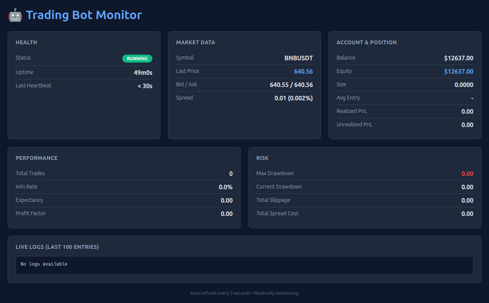

Featured · Mobile Banking & SNAP API
VariaGo — Mobile Banking PWA & API Gateway
OJK & UU PDP-aligned mobile banking platform with a custom TypeScript SNAP middleware hub powering real-time BNI Virtual Accounts, QRIS, and Maker–Checker CIF governance.
SYSTEM ARCHITECTURE
POJK 34/2025 READY
SNAP Gateway
BNI Direct VA + QRIS MPM
Governance
Maker–Checker CIF Sync
Assurance
26/26 RBAC Tests + DR Drills
Client Stack
Vue 3 PWA · Laravel · Node TS
Vue 3 PWA · Laravel · TypeScript Gateway
Zero third-party middleware fees
Vue 3
Laravel
TypeScript
SNAP BI / QRIS
POJK 34/2025
Architecture & Impact
Challenge: Connect mobile banking and core banking systems to BNI Direct SNAP Virtual Accounts and Bluepay QRIS while meeting POJK 34/2025 governance and UU PDP No. 27/2022 data controls without expensive vendor licensing.
Approach: Deployed a custom Node.js/TypeScript API Gateway Hub alongside the Vue 3 PWA + Laravel backend — handling SNAP BI signatures, real-time CBS overbooking, H+1 settlement batching, Maker–Checker–Approver CIF reconciliation, and universal API audit logs.
Impact: Eliminated third-party middleware setup/annual fees, passed 26/26 admin RBAC verification checks and isolated DR restore drills, and established auditable digital banking workflows.
Featured · Go · Live Trading
Algorithmic Trading System (Go + Binance)
Autonomous 24/7 execution engine trading 6 symbols with confidence-weighted entries, Kafka pipelines, and automated risk controls.

Trading Bot Monitor (Live UI)
60.8% backtested win rate
Go
Binance API
Kafka
Smart Money
Architecture & Impact
Challenge: Combine Smart Money on-chain signals (whale tracking, DeFi flows) with deterministic technical execution running 24/7 with hard risk limits.
Approach: Built a Go execution core connected to Binance API and Kafka event streams, scoring multi-source signals across SuperStrategy and breakout scanners.
Impact: Processes 6 live pairs continuously with Telegram alerting, automated liquidation protection, and a 60.8% validated win rate.
Fintech · Laravel 11 · Operations
VariaPlatform — Modular CBS Analytics & Watchdogs
Replaced legacy procedural PHP with a modular Laravel 11 core featuring 6-hourly CBS index rebuilds and autonomous risk, liquidity, and cash-threshold daemons.
Laravel 11
PHP 8
MySQL / MariaDB
Watchdogs
Architecture & Impact
Challenge: Modernize legacy reporting scripts into an auditable internal banking analytics and attendance platform synchronized with periodic core-banking backups.
Approach: Built modular Laravel packages with 17 automated tests, scheduled post-restore index rebuilding and cache warming, and continuous watchdog daemons flagging high-value teller activity, maturing deposits, and credit risk indicators into a staging review queue.
Impact: Cut reporting latency, standardized automated testing, and gave operations daily 1-click anomaly reconciliation.
Infrastructure · Email & Compliance
Hybrid Enterprise Mail & Audit Vault
Split-delivery mail architecture pairing Google Workspace with a self-hosted Postfix/Dovecot/Rspamd cluster, Nextcloud Mail, and an immutable regulatory archive.
Postfix / Dovecot
Rspamd
Nextcloud
SPF / DKIM / DMARC
Architecture & Impact
Challenge: Provision 24+ department and staff mailboxes with full OJK audit retention and Google Workspace interoperability while keeping per-seat licensing lean.
Approach: Engineered split-delivery MX routing between Google Workspace and a hardened VPS mail stack integrated with Nextcloud webmail, dual SPF/DKIM/DMARC/FCrDNS PTR authentication, and automated compliance BCC journaling.
Impact: Delivered end-to-end verified external deliverability and 100% inbound/outbound regulatory email archiving.
Fintech · CodeIgniter 4
OpenBankPlus — Financial & Insurance Platform
Serving 200+ BPR clients and 100K+ monthly transactions — unified e-statement OCR analysis, digital insurance underwriting, and biller payments.
PHP 8
CodeIgniter 4
FPDI/FPDF
DurianPay
Architecture & Impact
Challenge: Unify bank e-statement analytics, insurance underwriting (AJK, Property, Vehicle), and high-volume bill payments into one multi-tenant system.
Approach: Engineered 5 core modules covering e-statement parsing, FPDI/FPDF template underwriting, PhpSpreadsheet triage, DurianPay checkout, and full API audit logs.
Impact: Eliminated manual underwriting entry and enabled real-time payment reconciliation across 200+ institutional tenants.
Enterprise · HR Tech · On-Premise
HRIS Platform — Payroll & Compliance
Automated PPh 21 and BPJS payroll calculations replacing days of manual spreadsheet work with seconds-long on-premise execution.
React
TypeScript
Node.js
Prisma
CoreTax
Architecture & Impact
Challenge: Deliver strict on-premise Indonesian labor compliance and GPS/selfie attendance where zero employee data may leave company infrastructure.
Approach: Built React + TypeScript frontend, Express/Prisma backend on PostgreSQL, Dockerized deployment, progressive PPh 21 brackets, BPJS automation, and CoreTax BPMP XML exports.
Impact: Replaced manual payroll completely, eliminated proxy clock-ins with GPS selfie checks, and maintained full audit trails.
AI Agents · Python
Hermes — Autonomous AI Agent
Handles 200+ tool calls per session with 95%+ success rate across research, code review, server ops, and trading automation.
Python
AI Agents
RAG
Qdrant
Architecture & Impact
Challenge: Move beyond stateless chatbots into a production agent with durable memory, 30+ integrations, and sub-agent delegation.
Approach: Built a Python orchestration loop over Qdrant RAG memory with terminal, file, and web tooling plus multi-platform Telegram/Discord interfaces.
Impact: Reliably executes long multi-step workflows (200+ tool calls/session) across operational and research tasks.
AI / ML · Quantitative
Stock & Crypto Prediction Engine
78% directional prediction accuracy combining LSTM and XGBoost ensembles with daily retraining for live signals.
Python
LSTM
XGBoost
Backtesting
Architecture & Impact
Challenge: Generate actionable risk-adjusted directional signals for both equities and crypto rather than unvalidated chart overlays.
Approach: Paired time-series LSTM models with feature-engineered XGBoost classifiers trained on historical OHLCV data across 5 backtest iterations.
Impact: Hit 78% directional accuracy and validated a 60.8% win rate on BNB at 1:2 risk/reward feeding live trading bots.
Infrastructure · Vector Search
RAG Knowledge Retrieval System
Sub-second citation-backed retrieval across 10K+ document chunks powering long-term agent memory without hallucinations.
Python
Qdrant
FastAPI
RAG
Architecture & Impact
Challenge: Ingest, chunk, embed, and retrieve domain documents while preserving verifiable source citations.
Approach: Deployed a FastAPI pipeline backed by Qdrant vector search with structured metadata filtering for LLM consumers.
Impact: Serves 10K+ indexed chunks with sub-second lookup latency as the retrieval backbone for Hermes.
EdTech · Full Stack
School Management System
Eliminated 80% of manual paperwork — turning hours of grading and report card assembly into minutes.
PHP
MySQL
JavaScript
EdTech
Architecture & Impact
Challenge: Replace paper-based student records, curriculum tracking, and grading for non-technical teaching staff.
Approach: Built an end-to-end web system during tenure as Vice Principal focused on intuitive teacher workflows and automated report generation.
Impact: Cut administrative overhead by 80% across grading cycles and institutional records.
Open Source · Python / PyPI
json-memory — Associative Recall for AI
Zero-dependency Python library for hierarchical JSON agent memory with 3-layer stemming recall, TTLs, LRU eviction, and 101 passing tests.
Python
PyPI
101 Tests
Zero Deps
Architecture & Impact
How: Implements exact → normalized → fuzzy three-layer stemming, thread-safe atomic merges, schema validation, and OpenAI tool schema generation.
Impact: Outperforms naive keyword recall by 10% on complex queries; used in production by Hermes (pip install json-memory).
go-api-starter
Production-ready Go service template with WebSocket support, Docker packaging, graceful shutdown, and structured logging.
Go
WebSocket
Docker
Multiplayer Game · Node.js / Socket.IO
Perang Korporat — Office Party Strategy
Jackbox-style dual-screen office battle game: laptop/projector host arena synced live with mobile phone controllers via 4-letter room code or QR, zero app download.
Node.js
Socket.IO
10 Divisions
Dual-Screen
Mechanics & Architecture
Gameplay: 10 corporate divisions compete across a shared office map with shrinking Zona Efisiensi budget-cut rounds, Lembur Bareng team coordination, and Serikat Pengawas spectator actions.
Delivery: Built separate phone controller and host arena views with real-time Socket.IO room sync, wall-aware direction locking, and built-in game audio cues.
Multiplayer Game · Socket.IO / PWA
Juragan Kavling — Bekasi Raya Board Game
Real-time 2–6 player Bekasi-themed property trading board game in the browser with instant 4-letter room matchmaking and session persistence without accounts.
Socket.IO
PWA
2–6 Players
3 Visual Themes
Mechanics & Architecture
Gameplay: Complete property monopolies (up to 5× rent), anti-snipe live auctions (+2s extension on last-second bids), and Poin Dendam comeback mechanics.
Delivery: Shipped installable web PWA with switchable Pasar, Classic, and City skins plus localStorage session recovery.